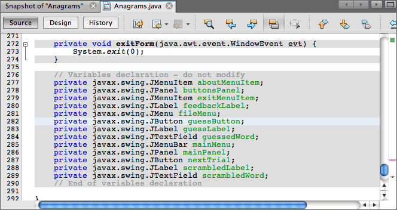
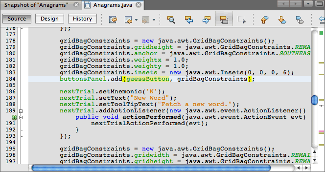

Apache NetBeans
Apache NetBeansJust released!
Использование визуального отладчика в NetBeans IDE
| This tutorial needs a review. You can open a JIRA issue, or edit it in GitHub following these contribution guidelines. |
В этом документе даны указания по использованию визуального отладчика для поиска ошибок и отладки программного кода для визуальных элементов вашего приложения графического интерфейса. Визуальный отладчик приложений можно использовать в приложениях Java или JavaFX с графическим интерфейсом.
В этом разделе мы рассмотрим использование визуального отладчика на примере игры "Анаграммы". В этом разделе мы продемонстрируем, как сделать снимок графического интерфейса пользователя приложения и затем использовать этот снимок для поиска исходного кода, добавления прослушивателей в событие и просмотра журнала событий компонентов графического интерфейса пользователя.

Figure 1. Содержимое этой страницы применимо к IDE NetBeans 7.2, 7.3, 7.4 и 8.0
Для работы с этим учебным курсом требуется следующее программное обеспечение и ресурсы.
| Программное обеспечение или материал | Требуемая версия |
|---|---|
7.2, 7.3, 7.4, 8.0 |
|
версия 7 или 8 |
Примечание о JUnit. Если библиотеки JUnit не были установлены во время установки IDE, то при попытке отладки приложения появится сообщение о отсутствующем ресурсе с предложением установить JUnit.
Создание снимка графического интерфейса пользователя
В данном учебном курсе в качестве примера будет использована игра "Анаграммы", приложение Java для настольного компьютера, с простым графическим интерфейсом, входящим в набор примеров мастера создания проекта. После создания проекта вы начнете процесс отладки и сделаете снимок графического интерфейса приложения.
-
Выберите 'Файл' > 'Новый проект' (Ctrl-Shift-N; ⌘-Shift-N в Mac) в главном меню, чтобы открыть мастер создания проектов.
-
В категории "Примеры" > Java выберите "Игра Анаграммы". Нажмите кнопку "Далее".
-
Укажите местоположение проекта. Нажмите 'Готово'.
При нажатии на кнопку 'Готово' IDE создает проект, который открывается в окне 'Проекты'.
-
Нажмите кнопку 'Отладка' на панели инструментов (Ctrl-F5; ⌘-F5 в Mac) для запуска сеанса отладки.
Также вы можете щелкнуть правой кнопкой мыши узел проекта в окне 'Проекты' и выбрав 'Отладка'.
Когда начнется сеанс, среда IDE запустит игру "Анаграммы" и откроет окно "Отладка".
Дополнительные сведения о работе с отладчиком см. в разделе Запуск и отладка проектов приложений Java в документе Разработка приложений в IDE NetBeans.
-
В главном меню выберите "Отладка" > "Сделать снимок графического интерфейса пользователя".
При выборе пункта "Сделать снимок графического интерфейса пользователя" среда IDE сделает моментальный снимок графического интерфейса пользователя и откроет снимок в главном окне.
В этом руководстве по использованию визуального отладчика окно "Отладка" использоваться не будет.
Работа с визуальным отладчиком
Снимок графического интерфейса пользователя — это средство визуальной отладки, помогающее найти исходный код для компонентов графического интерфейса пользователя. Иногда исходный код для компонентов графического интерфейса пользователя бывает трудно найти, а снимок позволяет найти исходный код по графическому интерфейсу, вместо поиска во всём коде проекта. Можно выбирать компоненты из снимка и вызывать задачи из всплывающего меню, чтобы просматривать исходный код компонента, показывать прослушиватели и создавать точки останова в компонентах.
Поиск исходного кода компонентов
В этом упражнении будет продемонстрировано использование снимка графического интерфейса пользователя для поиска строк исходного кода, в которых объявляется и определяется компонент. При выборе компонента на моментальном снимке графического интерфейса пользователя можно использовать всплывающее меню для вызова различных команд.
Команды также можно вызвать из окна 'Навигатор'. Для этого щелкните правой кнопкой мыши компонент и выберите команду во всплывающем меню.
-
На снимке графического интерфейса пользователя нажмите кнопку "Определить".
При выборе компонента на снимке среда IDE отобразит подробные сведения о выбранном компоненте в окне "Свойства". Если окно 'Свойства' не отображается, выберите 'Окно > Свойства' в главном меню.

Figure 2. Снимок графического интерфейса пользователя
Среда IDE также отображает местоположение компонента в иерархии формы в окне навигатора.

Figure 3. Снимок графического интерфейса пользователя
-
Щелкните кнопку "Определить" правой кнопкой мыши и во всплывающем меню выберите пункт "Перейти к объявлению компонента".
При выборе команды "Перейти к объявлению компонента" среда IDE открывает файл исходного кода в редакторе и перемещает курсор на ту строку в коде, в которой объявляется guessButton .

Figure 4. Строка кода, в которой объявлен компонент
-
Щелкните кнопку "Определить" правой кнопкой мыши на моментальном снимке и выберите "Перейти к исходному коду компонента".
При выборе команды "Перейти к исходному коду компонента" среда IDE открывает файл исходного кода в редакторе и перемещает курсор на строку исходного кода компонента JButton.

Figure 5. Строка исходного кода компонента
На снимке графического интерфейса можно воспользоваться командой 'Перейти к добавлению иерархии', чтобы найти строку исходного кода, где компонент добавляется в соответствующий контейнер. По умолчанию команда 'Перейти к добавлению иерархии' отключена. Включить эту команду можно в окне 'Параметры'.
-
Откройте окно 'Параметры'.
-
В окне 'Параметры' перейдите на вкладку 'Отладчик Java' в категории Java.
Примечание. В NetBeans IDE 7.1 вкладка 'Отладчик' находится в категории 'Разное' в том же окне 'Параметры'.
-
В списке категорий выберите "Визуальная отладка", а затем выберите Отслеживать местоположения изменений в иерархии компонентов. Нажмите кнопку "ОК".
-
Остановите сеанс отладки (если он запущен).
Примечание. После включения команды 'Перейти к добавлению иерархии' в окне 'Параметры' потребуется начать сеанс отладки заново и сделать новый снимок графического интерфейса. После этого можно будет использовать команду.
-
Начните новый сеанс отладки и сделайте снимок графического интерфейса.
-
Щелкните компонент правой кнопкой мыши на моментальном снимке графического интерфейса пользователя и выберите "Перейти к добавлению иерархии".
Среда IDE откроет исходный код в редакторе на строке, в которой добавляется компонент.

Figure 6. Строка исходного кода, в которой компонент добавлен в контейнер
Экспорт событий компонента
В этом упражнении вы научитесь использовать снимок графического интерфейса пользователя и окно "События" для просмотра событий компонента, искать прослушиватели компонентов и события, запускаемые компонентами.
-
Щелкните правой кнопкой мыши кнопку "Определить" на моментальном снимке и во всплывающем меню выберите "Показать прослушиватели".
При выборе команды "Показать прослушиватели" среда IDE открывает окно "События". Как видно, узел "Особые прослушиватели" развернут.

Figure 7. Строка исходного кода, в которой компонент добавлен в контейнер
-
Правой кнопкой мыши щелкните com.toy.anagrams.ui.Anagrams$3 в узле "Особые прослушиватели" и во всплывающем выберите команду "Перейти к исходному тексту компонента".
Исходный код открывается в редакторе на той строке, в которой определяется прослушиватель.
-
Выберите пустое текстовое поле на снимке.
Также можно выбрать текстовое поле guessedWord в окне "Навигатор".
При выборе текстового поля элементы в окне "События" автоматически изменятся, и в окне будут отображены прослушиватели выбранного компонента.
-
В окне "События" дважды щелкните узел "Журнал событий". При этом откроется окно "Выбор прослушивателя".
Также можно щелкнуть правой кнопкой мыши узел Event Log и выбрать 'Задать события журналирования' во всплывающем меню.
-
В диалоге выберите прослушивающий процесс
java.awt.event.KeyListener. Нажмите кнопку "ОК".

Figure 8. Строка исходного кода, в которой компонент добавлен в контейнер
Теперь прослушиватель прослушивает события клавиатуры в текстовом поле.
-
В приложении "Анаграммы" в текстовом поле введите несколько символов.
При вводе вами символа это событие записывается в журнал. Развернув узел "Журнал событий", вы увидите, что каждое нажатие клавиши записано. Новые события появляются при каждом вводе символов в текстовое поле игры "Анаграммы". Развернув отдельное событие, например keyPressed , вы увидите свойства этого события в журнале.

Figure 9. Строка исходного кода, в которой компонент добавлен в контейнер
Развернув узел "Вызов из…" в каком-либо событии, вы увидите трассировку стека данного события.
Этот учебный курс познакомил вас с основами визуальной отладки в среде IDE. Визуальный отладчик позволяет найти исходный код и записывать в журнал события компонентов графического интерфейса пользователя. Это намного упрощает отладку приложений с графическим интерфейсом.
Дополнительные сведения
Дополнительные сведения о разработке и тестировании приложений в IDE NetBeans см. следующие ресурсы:
-
Демонстрация: Использование визуального отладчика
-
Демонстрация: Отладка многопоточного приложения
-
Демонстрация: + визуальная операция Step Into в отладчике NetBeans+
-
Демонстрация: обнаружение взаимоблокировки с помощью отладчика NetBeans
-
Демонстрация: использование блока оценки фрагмента кода в отладчике NetBeans
-
Учебная карта по основам среды IDE и программирования на языке Java

{kind=link}